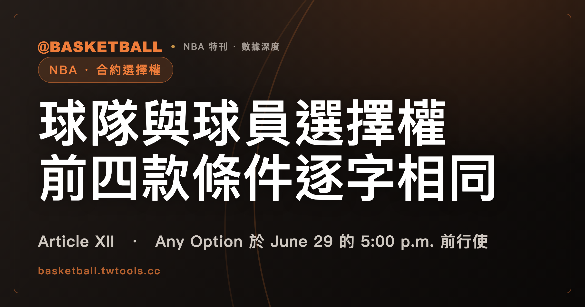

Option 是什麼？2023 CBA 的球隊選擇權與球員選擇權，前四款條件逐字相同
2023 NBA CBA Article XII 的 Section 1 與 Section 2(a)，分別用 (i)–(v) 五款列出 Team Option 與 Player Option 的條件。兩段的 (i)–(iv) 款逐字相同，其中 (iv) 款要求 Option Year 的 Salary（excluding Incentive Compensation）、Likely Bonuses、Unlikely Bonuses 各不低於 stated term 最後一年對應項目的 100%；在 Article XII 之內，(v) 款的 Second Round Pick Exception 例外字樣只出現在 Section 1。Section 4 把 Any Option 的行使期限寫成 Option 所涵蓋 Season 之前那個 June 29 的 5:00 p.m. eastern time，不行使就會成為 Restricted Free Agent 的球員，則是 June 25 之前。

新手村｜合約選擇權・Team Option 與 Player Option
本文依據 2023 年 NBA 與球員工會的集體談判協議（下稱 2023 CBA）全文，取得日 2026 年 10 月 4 日。只談 NBA，FIBA 不適用，也不寫任何金額與球員個案。
讀完之後，你可以拿一份標明「假設」的 Option 條款，對照 Section 1 的五款判斷它符不符合，也能對照 Section 4 判斷某一天的行使有沒有趕上期限。
Option 是把合約延長到 stated term 之後的選擇權，加上去的那一年叫 Option Year
2023 CBA Article I Section 1(ss) 把 Option 定義為 Player Contract 內有利於 Team 或 player、把該合約延長到 stated term 之後的 option。Section 1(tt) 把 Option Year 定義為：行使 Option 時，會加到 Player Contract 上的那一年。
(ss) 的定義同時涵蓋有利於 Team 與有利於 player 兩種。Article XII（標題 Option Clauses）把兩種拆開：Section 1 寫 Team Options，Section 2 寫 Player Options，中文慣稱球隊選擇權與球員選擇權。各自用 (i) 到 (v) 五款列出條件，行使期限另寫在 Section 4。
Section 1 的 Team Option 五款：延長不超過一年，Option Year 的 Salary 與 Bonuses 各不低於 stated term 最後一年的 100%
2023 CBA Article XII Section 1 的開頭是一句禁止：Player Contract 不得含有利於 Team 的 option，除非它是符合下列五款的 Option。句首另帶一個前置例外，「Except as provided by Article VIII, Section 1」。Article VIII Section 1 是 Rookie Scale Contract 那一套，下面「CBA 裡還有哪些機制也叫 option？」一節會回頭講。
五款用分號連在同一句，最後以 and 接上 (v) 款：
- (i)：Option 是 Veteran 與 Team 之間、或 Rookie 與 Team 之間 specifically negotiated 的，括號寫明 Rookie Scale Contract 除外。Article I 把 Veteran 定義為至少簽過一份 NBA Team 的 Player Contract 的人，Rookie 則是從未簽過的人。
- (ii)：授權把該 Contract 延長不超過 stated term 之後的 one (1) year。
- (iii)：該 Option is exercisable only once，只能行使一次。
- (iv)：Option Year 的 Salary（excluding Incentive Compensation）、Likely Bonuses、Unlikely Bonuses，各自不低於該 Contract stated term 最後一年對應項目的 100%。
- (v)：Option Year 的其他條款與條件，要與 stated term 最後一年相同。
五款裡有三款是可以直接數的數量：一年、一次、100%。
(iv) 款有兩個容易看漏的地方。第一，原文用 respectively 逐項對應：Option Year 的 Salary 對最後一年的 Salary，Likely Bonuses 對 Likely Bonuses，Unlikely Bonuses 對 Unlikely Bonuses，三項各算各的。第二，比較基準是該 Contract stated term 的最後一年。Likely Bonuses 在 Article I 指依 Article VII Section 3(d) 納入 player Salary 的 Incentive Compensation，Unlikely Bonuses 指依同一款排除在 Salary 之外的 Incentive Compensation。
(v) 款句首有一個括號例外：「except in the case of a Contract signed pursuant to the Second Round Pick Exception」。照這條文的結構看，依 Second Round Pick Exception 簽的 Contract，不受 (v) 款後半句約束。其餘 Contract 的 Option Year，除了 Base Compensation 的付款時程之外，其他條款與條件要與最後一年相同，括號特別點名「受保障的 Base Compensation 百分比」。Base Compensation 在 Article I 指 Compensation 中 bonuses 以外的部分。
Player Option 的五款：前四款與 Team Option 相同，Exhibit 2 與行使時點的要求只在 Section 2(a)
Section 2 寫有利於 player 的 option：除了 (b) 款的 Early Termination Option，只能是符合 (a) 款五款的 Option。和 Section 1 的差異如下：
| 比對項目 | Section 1（Team Option） | Section 2(a)（Player Option） |
|---|---|---|
| (i)–(iv) 款 | 文字相同 | 文字相同 |
| (v) 款 | 前有 Second Round Pick Exception 的例外 | 沒有該例外字樣 |
| Exhibit 2 | 沒有這一段 | 含 Base Compensation protection 者另有要求 |
| 行使時點 | 沒有這一段 | 含 (B) 措辭者另有限制 |
前四款相同，從資格、年數、次數到 100% 都是。(v) 款後半句的內容也對得上；在 Article XII 之內，Second Round Pick Exception 的例外字樣只出現在 Section 1 的 (v) 款。
Exhibit 2 與 (B) 行使時點這兩項，只在 Section 2(a) 的五款之後出現：
- 如果 Player Contract 含有利於 player 的 Option，而且在 Option Year 提供全部或部分 Base Compensation protection，這份 Contract 還要在 Exhibit 2 的「Additional Conditions or Limitations」標題下，放入條文給的 (A) 或 (B) 其中一段措辭，原文明寫 but not both。
- 含 (B) 措辭的 Player Contract，不得把 player 的 Option 安排在早於「Option Year 之前那個 Season 中，Team 最後一場比賽的次日」行使。
Option 的行使權能不能附上個別協商的條件？
Section 3 的標題是 No Conditional Options。它的對象是含 Option 或 ETO 的 Contract（或 Extension）：Team 或 player 行使該 Option 或 ETO 的權利，必須在簽約時就固定，不得取決於任何 individually-negotiated condition 的滿足。
用一個假設的情境看。假設一份 Contract 寫著「球員在某個 Season 達到某個個人條件，Team 才可以行使 Option」，而這個條件是這份合約個別協商加進去的。照 Section 3 的字面，這就是行使權取決於 individually-negotiated condition 的滿足，這個寫法落在 Section 3 禁止的範圍裡。
Section 3 管的是行使權在簽約時怎麼固定。簽約之後的修約另有條文，見下面「CBA 裡還有哪些機制也叫 option？」一節。
Option 要在哪一天之前行使，行使之後通知又走到哪裡？
Section 4 的標題是 Exercise Period。第一句寫 Early Termination Option（ETO）；第二句寫 Option，原文是 Any Option：必須在 Option 所涵蓋 Season 之前那個 June 29 的 5:00 p.m. eastern time 前行使。
同一句以 except that 接了一個例外：球員的 Option 如果「不行使他就會成為 Restricted Free Agent」，必須在 Option 所涵蓋 Season 之前那個 June 25 之前行使。Article I 把 Restricted Free Agent 定義為受 Team 依 Article XI 的 Right of First Refusal 約束的 Veteran Free Agent；怎麼成為 RFA，站內的限制性自由球員的配對權從哪來，有完整的流程。那一篇談資格報價的期限，同樣用到 June 29 下午 5:00，是另一套機制。
兩個期限並排：
| 哪一種 Option | 期限 | 鐘點與時區 |
|---|---|---|
| Any Option（except that 子句涵蓋的除外） | Option 所涵蓋 Season 之前那個 June 29 | 5:00 p.m. eastern time |
| 球員的 Option，不行使他就會成為 Restricted Free Agent | Option 所涵蓋 Season 之前那個 June 25 之前 | 原文這一句沒有寫鐘點與時區 |
行使之後的通知寫在 Section 5，標題是 Option Exercise Notices：NBA 自 Team 收到任何 Option 或 ETO 的行使或不行使通知後，兩個 business days 內，要把通知副本交給 Players Association。
CBA 裡還有哪些機制也叫 option？
Article XII 之外，2023 CBA 還有幾處用到 option 這個詞。它們各有各的條文：
| 機制 | 條文位置 | 原文寫什麼 |
|---|---|---|
| Early Termination Option（ETO） | Article I Section 1(u)；Article XII Section 2(b) | 有利於 player、縮短 Player Contract 所涵蓋年數的 option |
| Rookie Scale Contract 的兩個 Team Option | Article VIII Section 1(a) | Team 與 First Round Pick 之間的合約涵蓋兩個 Seasons，另有第三 Season 與第四 Season 各一個有利於 Team 的 Option；行使期間從第一（第二）個 Season 最後一天的次日起，到隨後的 October 31 |
| 依 Second Round Pick Exception 簽的合約 | Article VII Section 6(k)(1) | 期限是兩個 Seasons 加第三 Season 的 Team Option，或三個 Seasons 加第四 Season 的 Team Option |
| Standard NBA Contract Conversion Option | Article II Section 11(f) | 每份 Two-Way Contract 要給 Team 一個把它在合約期間轉成非 Two-Way Contract 的 option |
| Two-Way Player Conversion Option | Article I Section 1(cccc) | 含 Exhibit 10 的 Player Contract 內有利於 Team、把合約轉成 Two-Way Contract 的 option |
Rookie Scale Contract 的 Option 窗口與順延日怎麼算，站內的新秀合約入門，有「球隊行使 Option 的窗口」一節。Section 4 的第二句寫 Any Option，June 29；Article VIII Section 1(a) 對 Rookie Scale Contract 的 Option 寫 October 31。CBA 全文裡找不到把這兩個日期互相調和的句子。
雙向合約這一行要留意。Two-Way Contract 的 Standard NBA Contract Conversion Option 是把合約轉成非 Two-Way Contract 的選擇權；Article II Section 11(d) 另寫 Two-Way Contract 的期限不得超過兩個 Seasons，也不得含 Option Year 或 Early Termination Option。這個「選擇權」的條文住在 Article II，不在 Article XII，完整說明在站內的雙向合約入門「轉正的選擇權握在球隊手上」一節。
Article XII 也不是 Option 的全部規則。Article VII Section 7(a)(2)(iii) 允許，為完成該款所述類型的 Extension，Team 與 player 修約，同時約定 Option 的行使或不行使與 Extension。Article VII Section 7(d)(4) 允許，在交易 Player Contract 時，不受 Article XII Section 2(a) 任何相反規定影響（notwithstanding），player 與 assignor Team 修約約定 Option 的行使或不行使，後面還接兩項條件。
假設的 Option 條款：符不符合五款，趕不趕得上期限？
下面兩張表都是假設的情境，沒有任何真實合約或球員。
第一張：對照 Section 1 的 Team Option 五款。假設每一份 Option 都不是依 Second Round Pick Exception 簽的合約，(i) 款也符合。
| 假設的 Option | 對照哪一款 | 結果 |
|---|---|---|
| 甲：延長 1 年，只能行使一次；Option Year 的 Salary、Likely Bonuses、Unlikely Bonuses 都等於最後一年的 100%；其他條款與條件不變 | (ii)–(v) | 五款都符合 |
| 乙：授權延長 2 年 | (ii)：延長不超過 one (1) year | 不符合 |
| 丙：Option Year 的 Likely Bonuses 只有最後一年的 90%，其他兩項都是 100% | (iv)：三項要各不低於 100% | 不符合 |
| 丁：最後一年有某個百分比的 Base Compensation 受保障，Option Year 把這個百分比改成別的數字 | (v)：受保障百分比不變 | 不符合 |
| 戊：Option Year 的 Base Compensation 付款時程和最後一年不同，其他條款與條件都不變 | (v)：付款時程在括號之外 | 這一項不構成不符合 |
再看一份假設的 Player Option：它在 Option Year 提供 Base Compensation protection，Exhibit 2 放的是 (B) 措辭，約定在 Option Year 之前那個 Season 的 Team 最後一場比賽「當天」行使。「當天」早於條文寫的「次日」，這個約定落在 Section 2(a) 不允許的範圍。
第二張：對照 Section 4 的行使期限。假設一份 Option 涵蓋 Season X，D 代表 Season X 之前最近的那個 June 29，與 D 同一年的 June 24 和 June 27 也都在 Season X 之前；練習不選 June 25 當天。
| 假設的情境 | 適用哪一句 | 結果 |
|---|---|---|
| Team Option，在 D 當天東部時間下午 4:30 行使 | Any Option 的 June 29 句 | 在 5:00 p.m. eastern time 之前 |
| Team Option，在 D 當天東部時間下午 5:30 行使 | Any Option 的 June 29 句 | 超過 5:00 p.m. eastern time |
| Player Option，球員不行使就會成為 Restricted Free Agent，在 June 24 行使（June 25 的前一天） | except that 子句的 June 25 句 | 在 June 25 之前 |
| 同一位球員的 Option，在 June 27 行使 | except that 子句的 June 25 句 | 不在 June 25 之前 |
| Player Option，球員不行使也不會成為 Restricted Free Agent，在 June 27 東部時間下午 3:00 行使 | Any Option 的 June 29 句 | 在 June 29 的 5:00 p.m. eastern time 之前 |
範圍與版本：2023 NBA CBA Article XII 的 Section 1 到 5
這篇讀的是 2023 CBA 本身的條文，沒有查任何球員的實際合約。Early Termination Option 的細節、Exhibit 2 的 (A)(B) 兩段指定措辭、Article VII Section 7 修約的條件，都只標出位置，沒有展開。CBA 會隨新協議或修訂更動，之後以官方最新版為準。
本文的讀法：CBA 裡同叫 option 的東西，條文住在不同的 Article，條件與期限各寫各的。
常見問題
Team Option 與 Player Option 的條件一樣嗎？
依 2023 NBA CBA Article XII，Section 1（Team Option）與 Section 2(a)（Player Option）各列 (i)–(v) 五款，(i)–(iv) 款逐字相同。在 Article XII 之內，Second Round Pick Exception 的例外字樣只出現在 Section 1 的 (v) 款；Section 2(a) 另有 Exhibit 2 與 (B) 措辭的要求。細節見「Player Option 的五款」一節。
Option 的行使期限是哪一天？
依 2023 NBA CBA Article XII Section 4，Any Option 要在 Option 所涵蓋 Season 之前那個 June 29 的 5:00 p.m. eastern time 前行使；球員的 Option 如果不行使他就會成為 Restricted Free Agent，則是該 Season 之前那個 June 25 之前，原文這一句沒有寫鐘點。Rookie Scale Contract 的 Option 窗口另寫在 Article VIII Section 1(a)，到 October 31。細節見「Option 要在哪一天之前行使」與「CBA 裡還有哪些機制也叫 option？」兩節。
Article XII 是 Option 的全部規則嗎？
依 2023 NBA CBA，Article XII 不是全部。Article VII Section 7(d)(4) 允許在交易 Player Contract 時，player 與 assignor Team 修約約定 Option 的行使或不行使，Section 7(a)(2)(iii) 則允許為完成該款所述類型的 Extension 修約，細節見「CBA 裡還有哪些機制也叫 option？」一節。
雙向合約的轉正選擇權，是 Article XII 的 Option 嗎？
依 2023 NBA CBA，Two-Way Contract 的 Standard NBA Contract Conversion Option 寫在 Article II Section 11(f)，不在 Article XII；Section 11(d) 另寫 Two-Way Contract 的期限不得含 Option Year 或 Early Termination Option。這個選擇權屬於 Team，見「CBA 裡還有哪些機制也叫 option？」一節與站內的雙向合約入門。
資料來源
- 2023 NBA Collective Bargaining Agreement（2023 年版，全文取得日 2026 年 10 月 4 日）：2023 NBA CBA 官方 PDF
- Article I Section 1：(g) Base Compensation、(u) Early Termination Option、(ff) Likely Bonus、(cccc) Two-Way Player Conversion Option、(eee) Restricted Free Agent、(eeee) Unlikely Bonus、(fff) Rookie、(gggg) Veteran、(ss) Option、(tt) Option Year
- Article II Section 11：(d) 期限、(f) Standard NBA Contract Conversion Option
- Article VII：Section 3(d)（經 Article I 的 Likely Bonus、Unlikely Bonus 定義引用）、Section 6(k)(1)、Section 7(a)(2)(iii)、Section 7(d)(4)
- Article VIII Section 1(a)
- Article XII Section 1 到 5